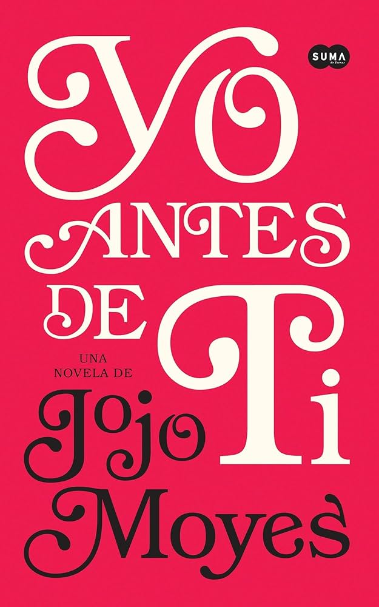

Libros de Romance

Orgullo y Prejuicio
Narra las aventuras y desventuras amorosas de las hermanas Bennet, centrándose en el personaje de Elizabeth. La autora presenta con comicidad la sociedad de su tiempo, colocando a la mujer en un lugar más notable que el que le correspondía en su época.

Yo Antes de Ti
Reúne a dos personas que no podrían tener menos en común en una novela conmovedoramente romántica. La historia plantea la pregunta: ¿Qué decidirías cuando hacer feliz a la persona que amas significa también destrozarte el corazón?